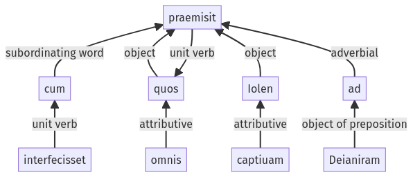

Hyginus, Fabuleer, 35pr.1.36-35pr.1.44a
35pr.1.26-35pr.1.35a | 121a.2.1-121a.2.37a
Sentence 475
35pr.1.36-35pr.1.44a
quos omnis cum interfecisset, Iolen captiuam ad Deianiram praemisit.
1 quos omnis
2 cum interfecisset
1 Iolen captiuam ad Deianiram praemisit
quos omnis cum interfecisset, Iolen captiuam ad Deianiram praemisit.
Highlighting:
- connecting words
- unit verb
- subject
- object
Color code:
- independent clause (level 1, transitive verb)
- subordinate clause (level 2, transitive verb)
